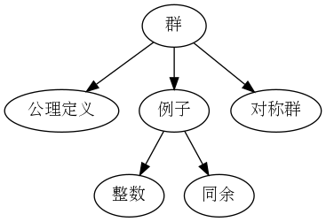
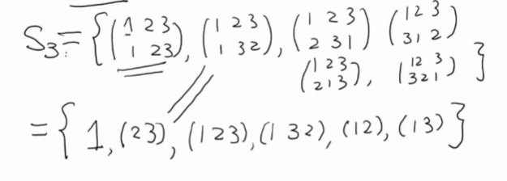
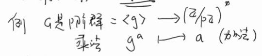
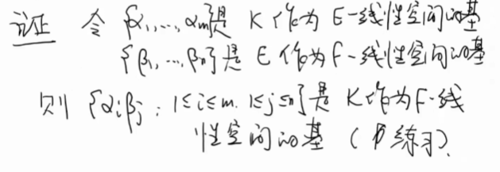
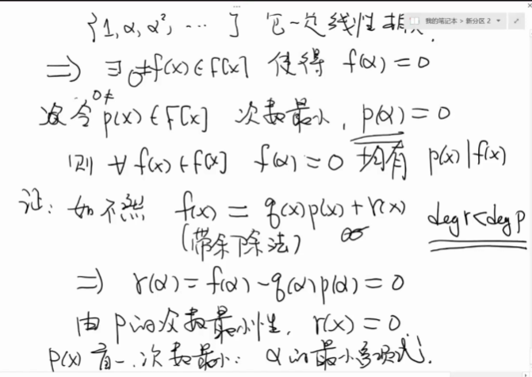

抽象之路笔记-
目前不适合看发布以调试
修订
着重补齐
太震撼，进展到第五讲感到很不简单可能要歇歇（结成浩你能不能写点这些代数的内容）
1. 内容介绍
梳理： 以人物串联的发展史
- 解方程历史
- 高斯之前
- 第三讲群论初步
- 第四讲尺规作图出发：域扩张、 Galois
- 第五讲环内容
- Kummer 的工作
- 青春理想
- 类域论
简介：
- 官方：
讲代数的历史，包括很多人文性内容如时代背景、历史变迁、横向对应
本短课程的主要目的是从数学发展史的观点，对代数和数论抽象化的历程，包括代数思想/概念/方法的发展史作一个简单介绍。
课程内容包括：
I. 从古巴比伦人求解一元二次方程开始，介绍求根公式的发展历程，包括意大利人的戏剧故事和阿贝尔、伽罗瓦的传奇。
2 ，介绍群论和伽罗瓦理论的基本思想和简单应用。
3 ，介绍数论从欧几里得到高斯的发展史。
4 ，介绍 Kummer 之前费马大定理的探索历程。
5 ， Kummer 对于费马大定理的探索如何促成理想概念的引入、交换环论和代数数论的诞生。
6 ，类域论和抽象代数的建立。
一次笔记尝试、算是看过一些基本代数包括数学女孩后的兴之所至吧。
2. 代数
讲座说一说数学家从会算到不会算的历程：对数字理解不断加深、发现更多关于数的秘密（无穷无尽定理）的过程。
2.1. 古巴比伦
这是两河(幼发拉底河与底格里斯河)流域的文明， 公元前1900-前1600，汉谟拉比法典诞生之地方；对应夏朝。 楔形文字 cuneiform 写在泥板上；
数学能力：
- 二次方程的求解 \(ax^2+bx+c=0\)
使用60进制，1-60 60-80 80-99 4*20+10+9
归功于 Francois thureau-Danigin 法国人 和 Otto Neugebauer 破解 BM13901 大英博物馆 BM 藏品
- 勾股数组
在中国商高定理、勾三股四弦五
考古发现泥板上记载了巨大的勾股数，如 \((12709,13500,18541)\quad (2291,2700,3541)\) 哥伦比亚大学 Plimpton 322 (Plimpton赠与的322号) ，Otto 和 Sachs 破译
如此巨大的数推测当时人应当知道公式。
中国已知证明：可从古代图像看出
例子 13901 问题2: 正方形面积-边长＝1430,求边长 此处 等价于问 \(x^2-x=870\)
解答： \(x^2-bx=c\)
| 步骤 | 说明 | 字母表示 | 结果 |
|---|---|---|---|
| 1 | 写下系数1 | b | 1 |
| 2 | 取一半 | \(\frac{b}{2}\) | |
| 3 | 取平方 | \(\left( \frac{b}{2} \right)^2\) | 1 |
| 4 | 加上870(c) | \(\left( \frac{b}{2} \right)^2+c\) | |
| 5 | 这是 \(29 \frac{1}{2}\) 的平方（开根号） | \(\sqrt{\left( \frac{b}{2} \right)^2+c}\) | \(29 \frac{1}{2}\) |
| 6 | 加上0.30 |
一步一步教过程
322 \(a^2+b^2=c^2 \Rightarrow \left( \frac{a}{c} \right)^2+\left( \frac{b}{c} \right)^2=1\) 取单位元 \(x^2+y^2=1\) 交点坐标
\(k\rightarrow (\frac{k^2-1}{k^2+1},\frac{2k}{k^2+1})\) 取 \(k=\frac{m}{n}\) 得到 \((\frac{m^2-n^2}{m^2+n^2},\frac{2mn}{m^2+n^2})\) 于是得到勾股数组： \((m^2-n^2,2mn,m^2+n^2)\) 得到本原的解
\(k=\{\frac{12}{5},\frac{64}{27},\frac{125}{54},\frac{9}{5},\dots\}\) 对注意到 \(m,n=2^i3^j5^k\) 原因：60进制
失传空白
Otto Neugebauer 只与数论波尔（尼耳斯波尔弟弟）发表一篇纯数学论文，主要是 创立 Zentrablatt Math(1931), 哥廷根。 希特勒上台在美国创立 Math Reviews(1939)
数学评论：
数学评论不应当和文章质量成正比。
好文章：大家都去读吧；
伟大数学家犯错误比末流数学家发现概率大。不应当忽视小数学家的贡献
张载（1020-1077）长安：为… 数学应当为往圣继绝学，传承。
我想更应该取理解发掘，因为传承下来总是存在前人的删减，而可能删去了一些非凡之处
2.2. 欧几里德
Ευκλειδης 几何学之父
生平： 约公元前330年—公元前275年 ——长平之战赵襄王，秦始皇之前
2.2.1. 《几何原本》 Elements
(应当就叫原本) 西方科学数学基础
不赞同降低小学难度，需要建立好良好的逻辑体系
几何为主的世界缘故： 我认为这是因为古希腊人对数的观念有关
《几何原本》同时是数论的起源：
13章 7-9章自然数整数的理论。
- 欧几里德引理 若素数 p|ab 素性（定义素理想等等的根源）可以直接推得 算数基本定义 高斯最先证明 整数的唯一分解性质
- 欧几里德第二定理：素数有无穷多 证明：假设素数哥舒有限，有 \(p_1,\dots, p_n\) 令 \(N=p_1\cdots p_n+1\) 则N 与\(p_1,\dots, p_n\) 互素，矛盾。反证成立。
历史上第一个关于无穷的结果
关注几何，于是对测量天文观测感兴趣，有 古典几何的三大难题
- 化圆为方
- 三等分角
- 立方倍体
归化为代数问题，如果有 在范围内的解就可以做
1837 1,3 1882 -2
2.3. 丢番图 Diophantus
被称为代数学之父 I (总共有3个人都获得此称号)
生平为200-284 ——三国时代～ 对应中国（可谓成就最大）数学家刘徽（225-295）
2.3.1. 《算数》
著作： Arithmetica 130个问题 他的年龄是根据数 6 12 7
当时著作往往是问题集，例如《海岛算经》、《孙子算经》
丢番图方程/不定方程进行广泛研究， 研究称为丢番图分析
例如 A=2a+1,求 \(x,y\in \mathbb{Q}\) \(x^2+y^2=A,\quad x^2,y^2>a\)
圆上作直线
- 研究三类二次方程
当时没有0，负数用的很少因此这样书写（才符合当时可以接受的形式）
（对应几何的思维方式）
可以想到如今我们感到负数自然便捷，而它本身恰恰也是一种符号的发明创造：
应用合适的概念有时候可促使研究更方便
中世纪 古希腊失掉 此时没有完全失传 重新连上
线性同余数方程
2.4. 阿拉伯数学
2.4.1. 花剌子模
Mohammad ibnmussa al-khwarizmi (780-850)(成吉思汗屠城)
唐朝晚期 波斯人
首都巴格达智慧宫，研究数学、航海
文艺复兴从阿拉伯文成新翻译回来
著作： al-Jabar 代数
这个词的含义是一步一步的操作
12世纪中叶
- 引入印度数字（即阿拉伯数字）
- 拉丁写法： algorism,algoritmi=algrothm
2500年前的事情重做一遍
2.4.2. al Karaji
- 将代数从几何图形运算操作中解决出来，出现四则运算
- 同余数问题 有有理直角三角形（边长是有理数）边长 \(a,b,c\in \mathbb{Q}\) ，面积 \(n=\frac{1}{2}ab\) 找出所有整数 n. 等价于 对于怎样 n 有 \(\exists a\in Q\) 使得 \(a^2\pm n\) 也是有理平方数 \((a,b,c)\rightarrow (\left( \frac{c}{2} \right)^2-n, \left( \frac{c}{2} \right)^2, \left( \frac{c}{2} \right)^2+n)=(\left( \frac{a-b}{2} \right)^2, \left( \frac{c}{2} \right)^2,\left( \frac{a-b}{2} \right)^2)\) 等价于（现代数学研究） \(y^2=x^3-n^2x\) 椭圆曲线 有 \((x,y) \quad x,y\in \mathbb{Q}\quad y\neq 0\)
2.5. 三次四次方程的求根方程
16世纪（文艺复兴全盛期，后三杰活跃时期）意大利人的成就
历史背景： 城邦国家：米兰公国、威尼斯共和国、佛罗伦萨共和国（文艺复兴的中心）
在意大利北部 (1870现代意大利的国家 世界第一所大学： Bologue 大学1088 世界大学之母（校训） 12世纪 巴黎大学、帕洛瓦大学（意大利） 王安石去世两年后
2.5.1. del Ferro(1465-1526)
Bologue 大学教授 1515 发现三次方程公式，未发表 1525 告诉学生 Fior 菲奥尔, dello Nave(女婿+学生) 给了一本笔记本记录了求解思路过程 针对方程：
\begin{align*} \label{eq:1} \text{I} \quad&x^3+px=q\\ \text{II} \quad &x^3=px+q \quad p,q\neq 0 \end{align*}fior 会 I
2.5.2. Tartaglia 塔塔利亚（1500-1557）
威尼斯共和国 Brescia 人
名字是一个蔑称，表示口吃。1512 与法国交战负伤所致。 自学成才，教学为生 一生潦倒，有钱就投入自己喜欢的军事研究，尤其大炮
2.5.3. 决斗：互相出题
Fior 自得为唯一传人，认为塔塔利亚虚名不实或者剽窃，发起挑战：
1535.2.22开始，双方各出30题，两个月时间求解
1535.2.13凌晨 塔塔利亚钻研出两种方程的解法。随后自己出题类型包含 I 和 II 。 而 Fior 只出他会的 I ，于是塔塔利亚一小时解出所有题，大获全胜。
2.5.4. Cardano/Cardan 卡尔丹诺（1501-1576）
米兰大公国 医生、星象学家。在社交中 长袖善舞。 治好苏格兰大主教 大逆不道上帝星座被赦免
赌博（出千的技术），作家
自己写信给塔塔利亚，承诺将对方介绍给米兰的西班牙总督，资助他继续军事研究。同时自己永不发表结果。
唯一在场是 Cardano 学生： Ferrari
5 Ferrari 1540 发现四次方程的解法 Ferriari 天才聪颖 Cardano 写书 Ars Magna (The Great Art) 1543 della Navr 邀请 1545 出版，记录了
文艺复兴最重要的数学著作 1546 塔塔利亚自己出版
2.5.5. Ferrari (1522-1565)
14岁作为Cardano学徒 之后作Bologue 大学教授 早逝 Cardano 生命短暂不要期望他们取悦你
塔塔利亚 \(x=u+v\)
\begin{equation} \label{eq:2} \begin{split} u^3+v^3=-q \\ uv=-\frac{p}{3} \end{split} \end{equation}四次方程：
\begin{equation} \label{eq:3} x^4+px^2+qx+r=0 \end{equation}令 \(z=x^2+y\)
\begin{equation} \label{eq:4} \Delta = q^2-4()() \end{equation}三次方程
副产物：虚数的诞生
\begin{equation} \label{eq:5} \Delta=\frac{q^2}{4}+\frac{p^3}{27} \end{equation}\(\Delta<0\) 三次求根无意义 例： \(x^3-15x-4=0\) Ars Magna 引入复数 Ra Algrbra(使用拉丁文引入代数) 包含：丢番图、 介绍复数的运算法则
复分析：可视化
3. 2
文艺复兴结束的人物：
3.1. 韦达
（1540-）
1591《解析艺术引论》，使用现代的数学符号 xyz abc 符号运算 韦达定理：总结三次四次根与系数的关系
\begin{equation} \label{eq:6} \begin{split} x^n+a_1x^{n-1}+\cdots+a_{n-1}x+a_n \\ =(x-x_1)\cdots(x-x_n)\\ \end{split} \end{equation} \begin{equation} \label{eq:7} a_k=(-1)^k \sum\limits_{1过来知道系数如何知道根（伽罗瓦）
传奇人生：
- 破译密码：帮助法国国王赢得对西班牙的战争 代数与数论的应用
- 芬兰数学家挑战，要求法国国王解45次方程。韦达给出答案。
3.2. Fermat(1601-1665) 费马 数论之父
最高刑事法官 业余数学之王
- 解析几何（同笛卡尔） 代数用几何表达 几何用代数表达
- 概率论（与帕斯卡通信）
费马挚爱：数论 当时是小众学科，（帕斯卡不愿意）写信告诉法国科学家 无人感兴趣 额外贡献：光学费马原理
- 费马小定理： \(a^{p}\equiv a \mod p \quad p| \forall a \in \mathbb{Z}\)
- p 是平方和 \(\Leftrightarrow\) \(p=2, p=\equiv1\mod 4\)
- 大定理： 大于等于三没有整数解 只需要考虑 \(n=4,n=p\) 猜测他对于自己无穷递降法太自信于是写出“地方太小写不下”
证明 \(n=4\) 无非平凡解
- 不妨设 xy 互素
- 回顾勾股方程的本原解
3.3. Euler(1701-1783) 欧拉 最多产数学家
庞德丽亚金（双目失明） 算数的巅峰 伯努利的学生
圣彼得堡、柏林
分析进入数论 \(\zeta(s)=\sum\limits_{n>=1}\frac{1}{n^s}=\Pi_p \frac{1}{1-p^{-s}}\) 欧拉乘积 借此证明素数有无穷多 (有限乘积收敛，左边调和级数在1发散)
- \(\zeta(2)=1+=\frac{\pi^2}{6}\) 巴塞尔问题 \(\zeta(2n)=C_n\Pi^{2n}\)
黎曼将它变成复函数，解析开拓 3,5
- (数论的)欧拉定理： \(\phi(n)=\left\{ 0
模n的缩系
20岁干了很多事
3.4. 法国3L
Lagrange(1736-1813),Laplace,Legendre(1752-1833)
年纪轻轻的天才
3.4.1. Lagrange
自学数学成才 19 都灵教授 柏林科学院院士 拜伦普希金
- 1770:4平方定理 分析为什么次数小于4有根 分析求根公式 研究置换（为之后）
拉格朗日预解式 定理 \(\left| H \right|\left| \left| G \right| \right\) 元素的阶整除群的阶
3.4.2. Legendre
符号
\begin{equation} \label{eq:8} \left( \frac{a}{p} \right)= \begin{cases} 0 & p|a \\ 1 & a\equiv b^2 \mod p\\ -1& \text{else} \end{cases} \end{equation}后来被高斯重新做了 猜测：
- 二次互反律
一直苦恼于自己证明存在瑕疵
- 素数定理：
3.5. Gauss
(1777-1855) 数学王子
不世出的天才高斯登场了，可惜的是他基本只在25岁（1793）前研究数论，之后唯一关注的数论问题是上文素数定理 1801 《算数研究》 Disquisitiones Arithmeticae（基本是拉丁文写的最后学术专著）
- 第一本数论专著/教科书
- 先总结欧拉欧几里德中国算数，也就是初等数论到此总结完了
- 发明同余符号 \(a\equiv b \mod m \Leftrightarrow m|a-b\) 后一种是以前的写法
- 现代数论的开始（可以二次互反律）
- 证明二次互反律
二次型三次型－类数猜想～群（把之后概念拿过来就发现完美符合） 尺规正17边－费马素数 代数基本定理 复数引入数论
- 三平方和，从此可以立即推导出拉格朗日四次
184x
提升了数论的地位
费马无人问津，欧拉分析，因为高斯提升了数学家对数论的品味
3.6. Abel(1802-1829) Galois(1811-1832)
挪威 法国
受到时代巨大影响，他们的人生处在风雨飘摇岁月。。 拿破仑垮台（1814第一次下台）挪威丹麦， 丹麦支持拿破仑，之后将挪威让给瑞典。
当年很穷（之后因为发现石油富裕）， 政治动荡。
3.7. Abel
穷苦家庭 15岁开始学数学，之后进展飞快。
良师指导 Holmboe ， 发现才能很高，看欧拉拉格朗日拉普拉斯等等。 1820父亲去世，帮助继续读高中 深入唯一的大学当时是克里斯蒂安娜（首都，现在是奥斯陆）。 挪威政府资助游学
Crelle 柏林：1825 爱好者办杂志 6篇Abel 纯粹与应用数学
之前印刷 现存最古老杂质 19 德文 美国 anlysa of math
老师评价极高
研究五次方程； 主流数学椭圆函数。
雅可比 贫病 1828柏林给教授 病逝 Abel 积分范畴群引理判别 2002 Abel prize 挪威 百万 李 Lie 解析数论 近世代数C罗定理 身前身后名
高斯没看过
3.8. Galois
等刘维尔发掘的悲情人物
法国 路易18 共和党和保皇党斗争 王后镇 Banorg-la-Reine 一家是共和党人 父亲是市长。
12岁前母亲教导 路易大帝中学，最好的中学另一个是亨利四世中学 当时未学数学 人大附中
1823
1827学数学 一入侯门深似海， 参加考试 几个大学校 brand 巴黎高师、巴黎综合理工 当年politic 未考上
1829完成主要数学成功，发表连分数（已经蕴涵思想）。
5月提交五次方程： 柯西审稿退回，因为Abel,希望修改后重新。
7月父亲自杀因为他人羞辱。
12月通过会考录取高师（高师就在路易里面的几间房子） 数学认为表达不清但聪明其余科目不认可 再次提交傅里叶作为秘书1830.5.16去世，稿件丢失 奖给了Abel jacobi 椭圆函数
29 30
1831.1.17 泊松看不懂，认为没有完全展开
1815路易18上台24去世弟弟查理1937 七月革命推翻波旁王朝 菲利普国王上台
1831期间从事政治活动，被关监狱，长达10月
1832.5.30决斗31去世 写了一晚上信，总结自己贡献，寄给好朋友Chevalier,可以评价自己的成果 同其弟Alfred Galois 寄 写信给数学家，没有回信
1843.9.4 Liouville 报告提到伽罗瓦完全正确 原封不动发表自己杂志（法语的纯粹与应用杂志（第二古老数学杂志））
4. 数学理论
Galois 创立群论，同时在群论和域建立联系
4.1. 群论基础
群：一个数学结构——集合和运算（集合配上一个运算） \((G,\cdot)\)

4.1.1. 群公理
即群的定义
- 结合律 \((ab)c=a(bc)\)
- 单位元 \(e\) \(ex=xe=x\)
- 逆元 \(ab=ba=e\)
满足上述公理为结构群
特别的，为什么是 结合
以前算得是数——需要交换 之后研究项…使用置换，置换的过程需要考虑次序——交换就不满足了 采用更（弱）一般的结合（结合在映射中也更普遍，讨论像对称置换更方便）
进一步定义：
- 满足交换律的群： 交换群＝阿贝尔群（abelian group） 这个是小写
有限群 :元素个数有限
这里可以定义阶：
- 群的阶： \(|G|\) 元素个数
- 元素的阶： 满足 \(g^n=e\) 的最小整数 \(n\)
4.1.2. 例子
- 正整数加群 \((\mathbb{Z},+)\)
- 同余（将所有数除之后n得到的余数） \(\mathbb{Z}/n \mathbb{Z}=\{\bar{0},\bar{1},\cdots,\overline{n-1}\}\) 在加法下 \(\bar{a}+\bar{b}=\overline{a+b}\)
例子 1,2 是循环群。
- 正整数加群相等于 1 生成的无穷阶群 \(\left\langle 1 \right\rangle=\{\bar{1},\overline{1+1},\cdots\}\)
在乘法下（ \(\bar{a}\cdot \bar{b}=\overline{ab}\) ） 去掉 \(\bar{0}\) 的子集 \((\mathbb{Z}/n \mathbb{Z})^{\times}\) 构成乘法下的群
首先，
\begin{gather*} (a,n)=1,(b,n)=1 \Rightarrow (ab,n)=1 \end{gather*}集合在乘法下是封闭的（也就是用教科书的话：乘法是其中的二元运算）
结合律； 单位元； 逆元：
\begin{gather*} (a,n)=1 \Leftrightarrow ua+vn=1, ua=1-vn \\ \Rightarrow \bar{u}\bar{a}=\bar{1} ,\bar{u}=\bar{a}^{-1} \end{gather*}使用了裴蜀定理对互素展开第一步
上述简单说明了它是群。
大小 \(|(\mathbb{Z}/ n \mathbb{Z})^{\times}|=\phi(n)\) ，其中 \(\phi\) 为 Euler 函数（给出了 1-n 素数的个数）
进一步，特殊情况 \(n=p\) 为素数
\begin{gather*} (\mathbb{Z}/p \mathbb{Z})^{\times} =\{a:0\leq a \leq p ,(a,p)=1\}\\ =\{a:0\((\mathbb{Z}/p \mathbb{Z},+,\cdot)\) 构成（有限）域
4.1.3. 有限生成交换群定理
?类似高等代数中（史密斯标准型定理）
有限生成交换群的结构定理
交换群 G
\begin{equation*} G\equiv \mathbb{Z}^r \oplus \mathbb{Z}/m_1 \mathbb{Z} \oplus \cdots \oplus \mathbb{Z}/m_s \mathbb{Z} , m_1|m_2|\cdots|m_s \end{equation*}?初等因子不变因子
?中国剩余定理将它们分开
4.1.4. 对称群
什么样的是对称群： n 个元素的置换群
(从运算表上可以轻易看出对称)
从 Lagragrane 开始 Galios 非常重要
大小－阶： \(|S_n|=n!\)
不再是初等数论同余的群， 和行列式（需要）相关的群。
4.1.4.1. 置换
表达置换
\begin{gather*} \sigma = \begin{pmatrix} 1&2&3&4&5&6&7&8\\ 8&3&4&2&6&5&1&7 \end{pmatrix} \\ \neq (8 3 4 2 6 5 1 7) \\ = (187)(234)(56) \end{gather*}两行式写成一行 轮换式

Figure 1: 举例 S3
4.1.4.2. 对称群 \(S_n\) 上的乘法
为映射的集合（置换相当于一个操作——映射）
查看结合
\begin{gather*} x_n={1,\cdots,n}\\ \sigma: x_n\rightarrow x_n ,\sigma \in S_n\\ \tau\sigma: x\overset{\sigma}{\rightarrow} x \overset{\tau}{\rightarrow} x\\ \sigma\tau: x\overset{\tau}{\rightarrow} x \overset{\sigma}{\rightarrow} x \end{gather*}(\(\sigma\) 为双射)
映射的复合满足结合律，但不必然满足交换律 如： \((13)(12)=(123)\neq(132)=(12)(13)\)
只有1,2是交换群
4.1.4.3. 对换
\((ij)\) 表示对换： \(i\) 到 \(j\), \(j\) 到 \(i\)
轮换变成对换：
\begin{equation*} (1\ 2\ 3\ \cdots\ n) = (1\ n)(1\ n-1)\cdots(1\ 2) \end{equation*}变为了 \(n-1\) 对换的乘积
任何一个置换是若干对换的乘积，组合的次数的奇偶性不变
(关联行列式的奇偶交错定义)
所有偶置换集合 \(A_n\subset S_n\) 称为 交错群
大小 \(1/2 n!\)
4.1.5. 矩阵群
称为典型群～一般线性群（行列式不为0,即可逆）、特殊线性群（行列式为1）；正交群、酉群、辛群
4.2. 子群
符号表达： \(H\leq G\) (H 依然是个群) 对乘法和求逆封闭
研究 \(g\in G\) 包含 g 的最小子群是 \(\{ 1,g,\cdots,g^{k-1}\}\)
包含 g 也写作 a\(\left\langle g \right\rangle\) (g生成的群)。 此时， 原来 g 的阶就是群 \(\left\langle g \right\rangle\) 的阶
事实上，循环群只有两种（同构意义下），分别对应上面有限无限的整数和模剩余
4.3. Lagrange 定理
子群的阶一定整除大群的阶 (是大群阶的因子) \(\Rightarrow\) 元素的阶整除 G 的阶
陪集（元素平移）说明
证明思路：
构造陪集证明—— 要么重合要么不相交
\begin{gather*} G=\bigcup_{a\in G}aH\\ =a_1H \cdots a_s H \end{gather*}\(|G|=s|H|\)
特殊情况
4.3.1. Fermat 小定理
4.3.2. Euler 定理
4.3.3. 素数阶群
素数阶群都是循环群（只有一种结构）
4.4. 正规子群和商群
首先明确有陪集，陪集可以分左右
何时，对所有 g 左右陪集相等？相等就是正规子群。
\begin{gather*} gH=Hg\\ gN=Ng\\ \forall a g^{-1}ag\in N \end{gather*}商群 利用正规子群划分大群
\begin{gather*} G/N =\left\{ gN:g\in G \right\}\\ \bar{g}_1\bar{g}_2=\overline{g_1g_2}\\ g_1Ng_1N=g_1g_2N \end{gather*}4.4.1. 如何比较两个群
给出两者之间的映射，看这个映射的特点

同态且是双射（既单又满）
(略)同态基本定理
4.4.2. 如何研究两个群
有限群情况：
4.4.2.1. 可解群—— Galois
如果可以拆出一串子列
\begin{equation*} 1=G_0 \triangleleft G_1 \triangleleft \cdots \triangleleft G_n =G \end{equation*}使得 \(G_{i+1}\triangleleft G_{i}\) 是 p 阶循环群 称 G
5. 域的理论
field
一个更熟悉的结构——更完整限制更好的存在
\((F,+,-,\times,|)\)
正统数论基于有理数域讨论
域至少两个元素 0,1 (一个元素的域)
线性代数是基于域的 （有理数的有限扩域）
5.1. 域扩张
\(F\subset E\) 中间 0,1 是同样的 ， E 是 F 的扩域。 可以有乘法… 定义 \([E:F]:= \text{dim}_{F}E\)
定理 \(F\subset E\subset K\Rightarrow [K:F]=[K:E][E:F]\)
证明思路： 
有趣的例子：
化零多项式

代数数、超越数
5.2. 尺规作图问题
直尺：没有刻度； 圆规。
给定原点和另一点 相当于 (1,0) 可以得到哪些点
光从几何上分析是困难的，不过首先要明白可以实现什么样的操作：
可以操作
做出的点集合 F 是一个域， 且 \(\mathbb{Q}\subset F \subset \mathbb{R}\) 新的点如何来
有限步－每一步得到一个（新的）域
画圆：开根号
新的域
\begin{equation*} L'= \begin{cases} L\\ L(\sqrt{\Delta}) \end{cases} \end{equation*}当且仅当必要条件
2
三大问题
高斯定理
费马素数
5.3. Gal 扩张
6. 环
内容包含平方和、 Gauss 素数
\begin{equation*} n=a^2+b^2=(a+b \mathrm{i})(a-b \mathrm{i}) \end{equation*}- 可逆元
- 素元
- 不可约元
定义一个绝对值、模
Footnotes:
老师讲的时候直接手写，很清晰，这里希望文档把这个作成一个近乎讲义可以直接看得学的内容